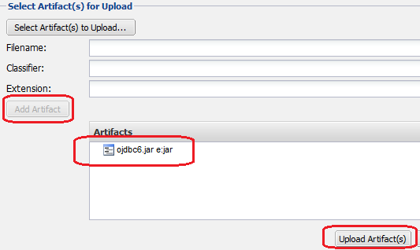

Sonatype NEXUS is the package repository manager software.
OSS version as well as commercial version of NEXUS is available. However its OSS version also has adequate functionalities.
This chapter explains the role and configuration method of OSS version of NEXUS.
When there is only one developer, a central repository on internet and a local repository on developer’s machine can be developed using Maven or ant+ivy.
However, when a Java application is to be divided into multiple sub-projects and development is to be carried out in a team,
library dependency resolution becomes complex; hence this dependency resolution needs to be automated.
For this, availability of package repository server is essential.
The following package repositories are required in Java application development project.
Proxy repository creates proxy to access external repository server including the central repository
3rd party repository for distributing the artifacts provided by others within the organization that are not available in the repository on internet
Private repository for storing the artifacts developed within the project
Group repository for consolidating access to artifacts of different multiple repositories into a single repository URL
In case of NEXUS, operations of such multiple repositories can be easily managed.
Start NEXUS by executing bin/nexus or bin/nexus.bat.
Access http://[IP or FQDN]:8081/nexus/ and check whether welcome screen of NEXUS is displayed.
Some repositories are provided by default. Except for a few cases, they are used as is for development.
Repository list is displayed on clicking Repositories on the menu on the left side of screen.
3rd party = This repository stores third-party libraries required in development but not available in the repositories on internet.
Releases = This repository stores the work products of release version of the applications developed internally.
Snapshots = This repository stores the work products of SNAPSHOT version of the applications developed internally.
Public Repositories This group repository is used for enabling access to the above repositories through a single URL.
7.4.3. Add TERASOLUNA Server Framework for Java (5.x) repository¶
When an application is to be developed using TERASOLUNA Server Framework for Java (5.x), TERASOLUNA Server Framework for Java (5.x) repository needs to be added in addition to the above repositories.
In order to use the created NEXUS using Maven command,
settings.xml file needs be created in the home directory of local development environment of the user.
Windows: C:/Users/[OSaccount]/.m2/settings.xml
Unix: $HOME/.m2/settings.xml
<?xml version="1.0" encoding="UTF-8"?><settings><mirrors><mirror><id>myteam-nexus</id><mirrorOf>*</mirrorOf><!-- CHANGE HERE by your team own nexus server --><url>http://IPorFQDN/nexus/content/groups/public</url></mirror></mirrors><activeProfiles><activeProfile>myteam-nexus</activeProfile></activeProfiles><profiles><profile><id>myteam-nexus</id><repositories><repository><id>central</id><url>http://central</url><releases><enabled>true</enabled></releases><snapshots><enabled>true</enabled></snapshots></repository></repositories><pluginRepositories><pluginRepository><id>central</id><url>http://central</url><releases><enabled>true</enabled></releases><snapshots><enabled>true</enabled></snapshots></pluginRepository></pluginRepositories></profile></profiles></settings>
Use mvn deploy command to upload jar/war file to the package repository (NEXUS) as an artifact.
A state in which anyone can deploy the application in package repository should be avoided as it causes confusion.
Therefore, it is desirable that mvn deployment for package repository is possible only by Jenkins.
In addition to the contents mentioned earlier, add the following to
.m2/settings.xml under the home directory of the user executing Jenkins of Jenkins server.
‘deployment’ is the account (set in NEXUS by default) having deployment permission and
its password is deployment123.
It is recommended to change the password in advance on NEXUS GUI screen.
Note
To avoid saving the password in plain text in settings.xml,
it is advisable to use password encryption function of Maven. Refer to
Maven - Password Encryption
for details.
Carry out the mvn deployment procedure in the build job of Jenkins as follows:
In case of the project managed in Maven, package repository in which artifact is stored, should be
specified using <distributionManagement> tag of pom.xml.
<distributionManagement><repository><id>releases</id><!-- CHANGE HERE by your team nexus server --><url>http://192.168.0.1:8081/nexus/content/repositories/releases/</url></repository><snapshotRepository><id>snapshots</id><!-- CHANGE HERE by your team nexus server --><url>http://192.168.0.1:8081/nexus/content/repositories/snapshots/</url></snapshotRepository></distributionManagement>
The mvn deploy command uploads the artifact with HTTP PUT for the URL specified using <distributionManagement> tag.
7.4.7. Upload 3rd party artifact (ex. ojdbc6.jar)¶
In the 3rd party repository, store the artifact which is not disclosed in external remote repository.
Typical example is JDBC driver (ojdbc*.jar) of oracle.
Oracle should be used as RDBMS; however,
central repository is not stored in the public repository on internet.
Therefore, it should be stored in the package repository in the organization.
Login as admin user. (Default password is admin123)
Select 3rdParty repository and select Artifact Upload tab.
Enter GAV information. (GAV = groupId, artifactId, version)
Select ojdbc6.jar on local PC and click Add Artifact button.
At the end, click Upload Artifact(s) button to save the jar file in repository.

With this uploading is completed.
Note
Uploading artifacts using NEXUS GUI screen is a manual task which
can easily lead to operational errors. Hence it is not recommended.
The method explained here should be used only for simple configurable libraries
having 1 or more 3rd party files such as ojdbc6.jar.
mvn deploy command should be used for other cases.
In order to add ojdbc6 of 3rd party repository to project dependency management,
just add dependency tag to pom.xml of the corresponding project.
If the target artifact is selected from Browse Storage tab, sample of dependency tag is displayed on the right side of the screen.
It just needs to be copied and pasted in pom.xml.